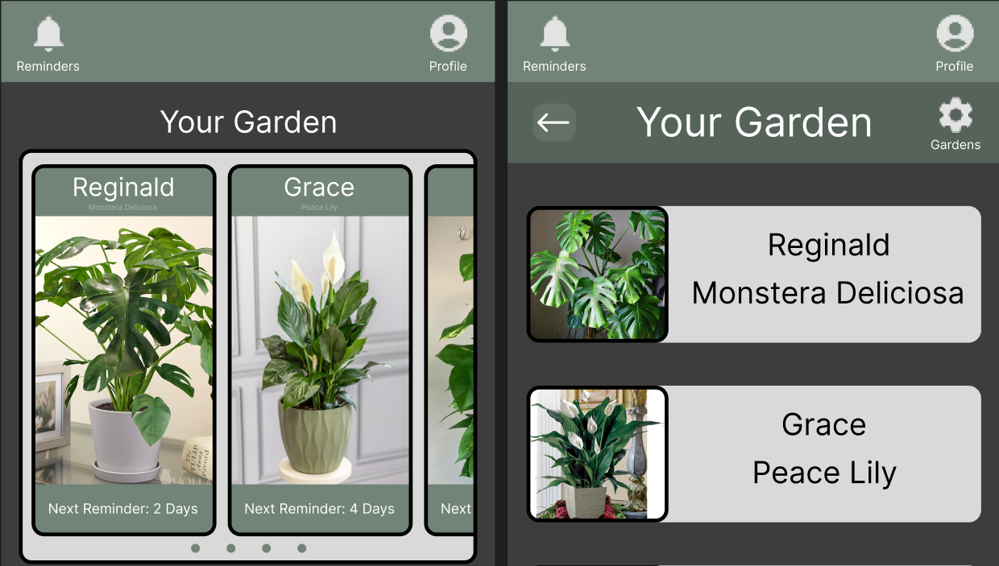

Garden assistant companion app
Garden Assistant Companion app was a continuation of the responsive website to expand the accessibilty and reach towards potential users.
Learn moreCrafting intuitive, accessible, and human-centered digital experiences. From initial user research to final interactive prototypes, here is a look at how I solve real-world problems through intentional design.

Garden Assistant Companion app was a continuation of the responsive website to expand the accessibilty and reach towards potential users.
Learn more
Garden Assistant is a start to finish UX design project, targeted towards helping users navigate house plant care and maintenance.
Learn more